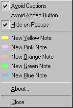
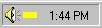
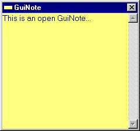

GuiNotes Instruction Manual - Version 1.0
Table of Contents
- Introduction
- System Requirements
- Parts of the Application
- Creating New GuiNotes
- Opening GuiNotes
- Editing GuiNotes
- Printing GuiNotes
- Closing GuiNotes
- Deleting GuiNotes
- Positioning of Closed GuiNotes
I. Introduction
GuiNotes (pronounced "gooey notes") are an electronic equivalent of paper sticky notes. Like paper sticky notes that stick to your monitor, GuiNotes stick to the title bar of your currently active window. Unlike paper sticky notes, GuiNotes automatically reposition themselves to stay visible yet out of your way -- when a different window is activated, the GuiNotes automatically move to that window's title bar.
You can use GuiNotes to jot down bits of information such as phone numbers, directions, web page or email addresses, or anything else you might write on a paper sticky note.
GuiNotes can be opened for editing. When opened, a GuiNote is temporarily removed from the active window title bar and displayed instead as a normal "always on top" window. You can leave GuiNotes opened for editing or ease of reading while you work. Closing a GuiNote restores it to its position on the active window title bar.
II. System Requirements
Windows 98, ME, NT4, 2000 or XP.
III. Parts of the Application
Taskbar Icon Menu

Status Tray showing
Yellow GuiNotes Icon
III.A. Taskbar Icon & Menu
GuiNotes displays a Taskbar Icon in the status tray on the Windows taskbar that indicates the current default note color. Double-clicking on the Taskbar Icon creates a new GuiNote of the default color.
Application options and controls are provided in the Taskbar Icon Menu, which is accessed by right-clicking on the Taskbar Icon.

An Open GuiNote
III.B. Open GuiNotes
An open GuiNote is a note that is open for editing. It is a normal "always on top" window that can be moved and resized. Text typed into the GuiNote is automatically saved when it is closed or when another window is activated.
The maximum text length of a GuiNote is limited to 512 characters. A character count is displayed in the title bar when the number of characters reaches or exceeds 450 characters. Pasted text exceeding the limit is truncated to 512 characters.
Each open GuiNote includes a right-click menu with controls for editing, printing, closing and deletion.
III.C. Closed GuiNotes
A closed GuiNote is a note that is displayed on the title bar of the currently active window with the first few words
of the note showing. When a different window is activated, for example when the user clicks on another window to work in
that window, closed GuiNotes automatically move to the new active window's title bar (for details, see X. Positioning of
Closed GuiNotes). The text of a closed GuiNote is read only - a note must be opened to edit its text.
Closed GuiNotes displayed on the Active Window title bar
Each closed GuiNote includes a right-click menu with controls for editing (color change only), printing, deletion, and manual arrangement.
IV. Creating New GuiNotes
New GuiNotes, which are initially open (see III.B. Open GuiNotes), may be created by either:
- Double-clicking on the Taskbar Icon,
- Selecting from the New Note items in the Taskbar Icon Menu, or
- Selecting a color from the New Note submenu in any closed GuiNote right-click menu.
Double-clicking on the Taskbar Icon creates a new note of the default color indicated by the icon. Selecting one of the
New Note items from either the Taskbar Icon Menu or the New Note submenu of a closed GuiNote right-click menu creates a new
GuiNote of the selected color and also changes the default color to the selected color.
The Right-Click menu of a closed GuiNote with the New Note submenu selected
New GuiNotes are inserted into the arrangement of closed GuiNotes in the rightmost space available. If no spaces are available, the new GuiNote is added in a new leftmost position.
The number of GuiNotes is limited to 64. A popup window informs the user when the limit has been reached.
V. Opening GuiNotes
Double-clicking on a closed GuiNote or selecting Open from the closed GuiNote's right-click menu opens the note for
editing. The closed GuiNote is removed from the title bar, but will
be replaced to the same location when the open GuiNote is closed. The remaining closed GuiNotes remain in their prior
positions on the previously active window. Any number of GuiNotes may be open at the same time.
An opened GuiNote that was previously closed
VI. Editing GuiNotes
VI.A. Editing Text
Text can be edited in a GuiNote by typing text into the note and by use of the standard editing functions provided in the right-click menu. Additionally, standard keyboard shortcuts may be used. A GuiNote automatically saves changes to its text when it is closed or when another window is activated. Changes to the text are automatically saved when the GuiNote is closed or when another window is activated.
Text cannot be edited in closed GuiNotes. However, text may be copied from a closed note by highlighting the text and using the standard ctrl-c keyboard shortcut.
VI.B. Changing GuiNote Color
The color of a GuiNote can be changed, whether it is open or closed, by selection of the desired color from the Color submenu in its right-click menu.
VII. Printing GuiNotes
A GuiNote can be printed, whether it is open or closed, by selection of Print from its right-click menu.
VII.A. Sizing Print Output
The size of the print output can be changed if the GuiNote is opened. To size the print output:
- Resize the opened GuiNote normally, for example by clicking and dragging the edge of the window, and then
- Print the GuiNote by selecting Print from its right-click menu.
The print output cannot be changed if a closed GuiNote is printed. In this case, the print is sized to the default size of an opened GuiNote.
VIII. Closing GuiNotes
An open GuiNote may be closed by either:
- clicking the X title bar button,
- selecting Close from the system menu,
- selecting Close from the right-click menu, or
- by hitting the Esc key.
IX. Deleting GuiNotes
A GuiNote may be deleted, whether it is open or closed, by selecting Delete Note from its right-click menu. A deletion
will leave a space in the row of closed GuiNotes where a new GuiNote may be inserted. The space may also be deleted (See
Delete Spaces).

Closed GuiNotes on the Active Window Title Bar after a Deletion
Deleted GuiNotes are unrecoverable. Consequently, a verification popup window is presented before a GuiNote is deleted.
X. Positioning of Closed GuiNotes
X.A. Manual Positioning
Closed GuiNotes may be arranged by the user in a number of ways, including:
- Bring to Front,
- Send to Back,
- Restack Notes, and
- Delete Spaces.
X.A.1. Bring to Front
Clicking on a closed GuiNote positions it in front of all other closed GuiNotes.
X.A.2. Send to Back
Selecting "Send to Back" from a closed GuiNote right-click menu positions the GuiNote behind all other closed GuiNotes. A GuiNote may not be visible after being sent to the back of the other notes, and restacking may be needed to see the note (see X.A.3. Restack Notes).
X.A.3. Restack Notes
Selecting "Restack Notes" from any closed GuiNote right-click menu restacks all of the closed GuiNotes so that at least a portion of each is visible. This is useful in relocating a GuiNote that is not visible because it has been sent to the back.
X.A.4. Delete Spaces
When a GuiNote is deleted, a space is left in the row of closed notes in the location previously occupied by the deleted GuiNote. Selecting "Delete Spaces" from any closed GuiNote right-click menu deletes spaces left from GuiNote deletions, repositioning the remaining GuiNotes in a contiguous row.
X.B. Automatic Positioning
Automatic positioning controls positioning of the closed GuiNotes to maximize visibility while minimizing interference with other items displayed on the screen. The automatic positioning includes:
- Positioning on the Active Window Title Bar,
- Overlapping, Compression and Hiding on the Active Window Title Bar, and
- Hiding in Other Situations.
X.B.1. Positioning on the Active Window Title Bar
The closed GuiNotes are automatically positioned as a group on the active window title bar when a window is activated, for example when a window first appears or when the user clicks on a window. If a different window is activated, the closed GuiNotes are automatically moved to the newly activated window so as to always be positioned on the window with which the user is working.
When the active window on which the closed GuiNotes are positioned is closed, minimized, or hidden, the closed GuiNotes are automatically moved to the new active window or hidden if no other window is activated.
There are some exceptions to the positioning of the closed GuiNotes on the active window title bar. These include positioning on Multiple Document Interfaces Applications, Tool Windows, and Open GuiNotes.
X.B.1.i. Multiple Document Interfaces Applications
A multiple document interface (MDI) application is an application with a main window that can include multiple child windows contained within the main window. GuiNotes are positioned on the main window title bar of MDI applications. Activations of child windows within the main window have no effect on GuiNote positioning.
X.B.1.ii. Tool Windows
A tool window is a window intended to be used as a floating toolbar. A tool window has a title bar that is more narrow than a normal title bar, and the window title is drawn using a smaller font. Closed GuiNotes are automatically hidden when a tool window is activated.
X.B.1.iii. Open GuiNotes
Closed GuiNotes are not moved to the title bar of an open GuiNote, even if the open GuiNote is the active window. Instead, the closed GuiNotes remain positioned on the title bar of the previously active window or, if they are currently hidden, they will remain hidden.
X.B.2. Overlapping, Compression and Hiding on the Active Window Title Bar
The closed GuiNotes are automatically overlapped, compressed, or hidden based on the available space on the active
window title bar. The following three illustrations show GuiNote positioning for different window widths.
Closed GuiNotes overlapped on the Active Window Title Bar
Closed GuiNotes compressed on the Active Window Title Bar
Closed GuiNotes hidden
X.B.3. Hiding in Other Situations
There are a variety of situations when the closed GuiNotes are hidden other than due to a narrow window width, including:
- No Active Window,
- Active Window has no Title Bar, and
- Active Window has a Virtual Title Bar.
X.B.3.i. No Active Window
Since the location to display the closed GuiNotes is determined by what window is active, the closed GuiNotes will be hidden if no window is currently active. The lack of an active window often occurs as a normal part of Windows operation when an application closes or is minimized.
X.B.3.ii. Active Window has no Title Bar
If the active window has no title bar, the closed GuiNotes will be hidden because there is no available space in which to place the closed GuiNotes. For example, a title window or "splash screen" that is displayed when an application starts usually lacks a title bar and displaying the GuiNotes on such a window would significantly obstruct the users view of the window content.
X.B.3.iii. Active Window has a Virtual Title Bar
Some applications include windows that have virtual title bars that replace the title bars which are normally controlled by the Windows operating system. Windows with virtual title bars often have a significantly different appearance from title bars of other applications. The closed GuiNotes are hidden when a window with a virtual title bar is the active window because the size and position of the title bar and its parts cannot be determined.
X.C. Automatic Positioning Options
Automatic Positioning Options control limits on the automatic positioning discussed above.
X.C.1. Avoid Captions
The Avoid Captions option in the Taskbar Icon Menu controls whether or not the closed GuiNotes overlap the text
displayed on the active title bar, i.e. the caption. If Avoid Captions is selected, the closed GuiNotes are positioned
between the caption and the buttons on the right side of the title bar so that they do not overlap the caption.
Closed GuiNotes displayed with Avoid Captions option selected
Deselecting the Avoid Captions option may cause part of the caption text to be obscured but
provides additional space for displaying the GuiNotes.
Closed GuiNotes displayed with Avoid Captions option deselected
Even with Avoid Captions deselected, a portion of the caption between the system menu icon (or window edge)
and the GuiNotes is always reserved to allow the user to manipulate the window normally.
X.C.2. Avoid Added Button
Some applications have an additional button provided on the title bar for controlling a window option such as whether
the window is kept always on top of other windows. If the closed GuiNotes overlap such a button, the Avoid
Added Button option in the Taskbar Icon Menu can be selected to add space equal to the width of an additional button to
the right of the GuiNotes so that they avoid overlapping the button.
Closed GuiNotes displayed with Avoid Added Button option selected
X.C.3. Hide on Popups
A popup window is a special type of window used for dialog boxes, message boxes, and other temporary windows that appear outside an application's main window. Popup windows are often small, and closed GuiNotes displayed on them are often highly overlapped or compressed (see X.B.2. Overlapping, Compression and Hiding on the Active Window Title Bar). Further, if popup windows are frequently opened, the closed GuiNotes will be frequently repositioned.
The Hide on Popups option can be selected to reduce visual distraction from frequent repositioning and from repositioning to minimally useful positions. If selected, the closed GuiNotes are automatically hidden when a popup window is activated and redisplayed when the application's main window or another non-popup window is activated.
It should be noted that some windows that appear to be main windows may actually be popup windows. If such a window is activated and Hide on Popups is selected, the closed GuiNotes will be hidden when they might be expected to be displayed.